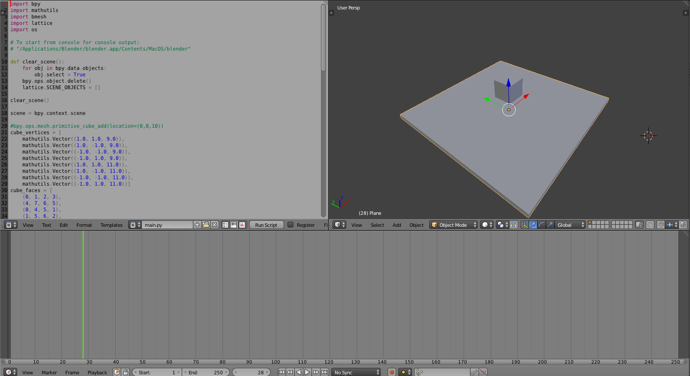
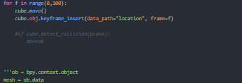
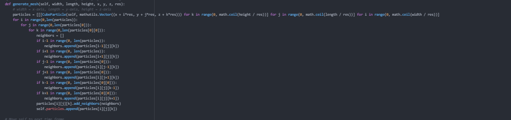

William Pengwpen@berkeley.edu |
Michelle Grace Wangmgwang@berkeley.edu |
Christopher Amezquitachristohperameqzuita@berkeley.edu |
The first thing we did was research into the topic of fracture simulation. We went through two very insightful documents. The first was titled "An animation system for fracturing of ri" and the second was titled "Energy Stability and Fracture for Frame Rate Rigid Body Simulations". We developed key data structures and algorithms for our simulation based off of these papers. The general idea of it was to represent scene objects as particle meshes where each particle has a connection strength to adjacent particles. These connections decrease proportionally in strength to impact/contact forces and particle distance from the origin of the force. Once the strength of any of these bonds drop below a specified threshold, the bond is considered broken. Once enough bonds are broken such that a chunk of connected particles is 'broken off', a new scene object is instantiated with its own force and properties in order to simulate fracturing. The driving algorithm behind determing where fractures occur was designed to be more realistic than uniform fracturing according to the research done in the first paper mentioned above. After an impact, we first look at the closest particle and from there, repeatedly choose a random neighbor to decrease the bond strength with and then going to that neighbor to repeat that step. We have a heuristic represnting decay of force between each step and the algorithm halts when the force becomes negligible. The underlying data structure supporting this is an array of particle objects associated with each scene object and each particle has pointers to its neighbors for easy traversal. Each particle is uniform in shape and defined as a cube with a center and constant cube length. This allows for easy calculation of vertices, which is important for computing the shape of detached objects due to fracturing. The dimensions of these cubes are defined by some predetermined constant representing the resolution (for particles per unit, not pixels in the screen) of our scene.
Here are some pictures of specific areas of our projects so you can get a taste for what we've accomplished. Below, we see our blender simulation in action, alongside our python scripts. We have a scene showing a cube falling on our platform with very accurate physics for all relevant forces except for friction.
Here we see the general class design and data structures implemented.

Here is the main loop that interfaces with our blender simulation.
Here is how we are generating our meshes for objects that are just simple cubes. This will be generalized to other objects soon. 
As of now, we are able to generate particle meshes for simple cube scene objects. We also have a working collision system, as well as a reaction to basic forces. We have a very solid grasp of Blender and how to integrate python scripts with it. We have become extremely good at simulating cubes falling onto stationary planes. We are even able to 'shoot' the cubes from whatever angles we choose. This is going to be very useful for when we want to test our collisions and fracturing. We have the general ground work for our fracturing simulator. The particles bonds are being affected in the ways that they should. In order to finish the fracturing simulator, we need to break off pieces due to fracturing and instantiate them as new objects. We also need to do calculations for total contact forces and resulting forces (on all affected parties). From there, we are looking to generalize this to more complicated objects which will require more advanced mesh generation techniques which we hope to solve through inside/outside testing given the outer bounds of a more complex object. We hope to get the fracturing working on a simple cube by this week and be able to generalize it by early next week. After that we will spend a couple days working on the deliverables and making our simulation presentable.